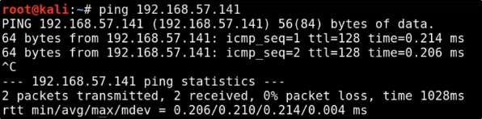

Pivoting Lab Setup
The concept of pivoting is like: we have a machine that talks to 2 different domain
We start from a domain, we exploit that machine and go for the next domain network!!
To get started, shut down both your Windows 10 machines.
We will choose the THEPUNISHER:
Go into "Virtual Network Editor" (Pro version of VMware) and select "Change Settings"

Click the Add button and add a network:

We need to change the network to something different to our usual one, and apply:
Normal one: 192.168.67.0/24
The new Network: 10.10.10.0/24

Here, we are going to add a Network Adapter to the VM and select the "Custom Network" with 10.10.10.0 net:

Now, we can isolate a machine like SPIDERMAN:
We can do that changing the actualy Network Interface with the new network 10.10.10.0 (VMnet7)

We can check the IP configuration in the machines:
THEPUNISHER user: Frank Castle
SPIDERMAN user: Marvel\Administrator
THEPUNISHER:

SPIDERMAN:

Now, On Kali Linux, we just need to check if we can ping the THEPUNISHER machine with 2 network interfaces:
